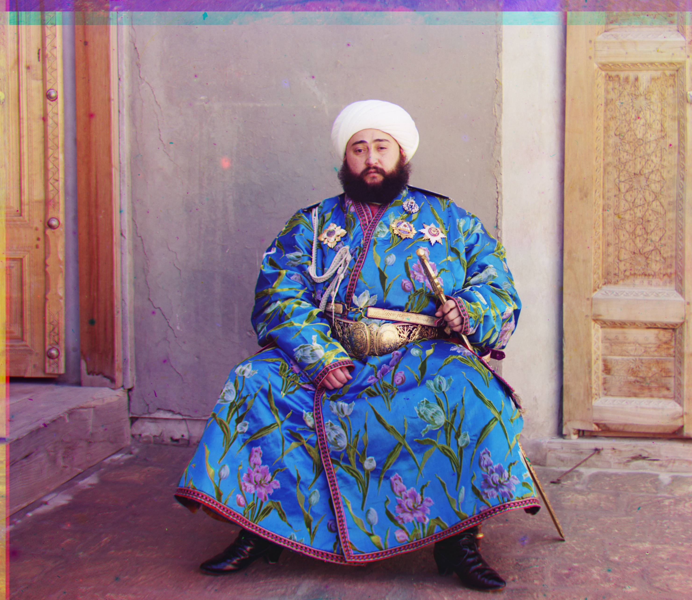
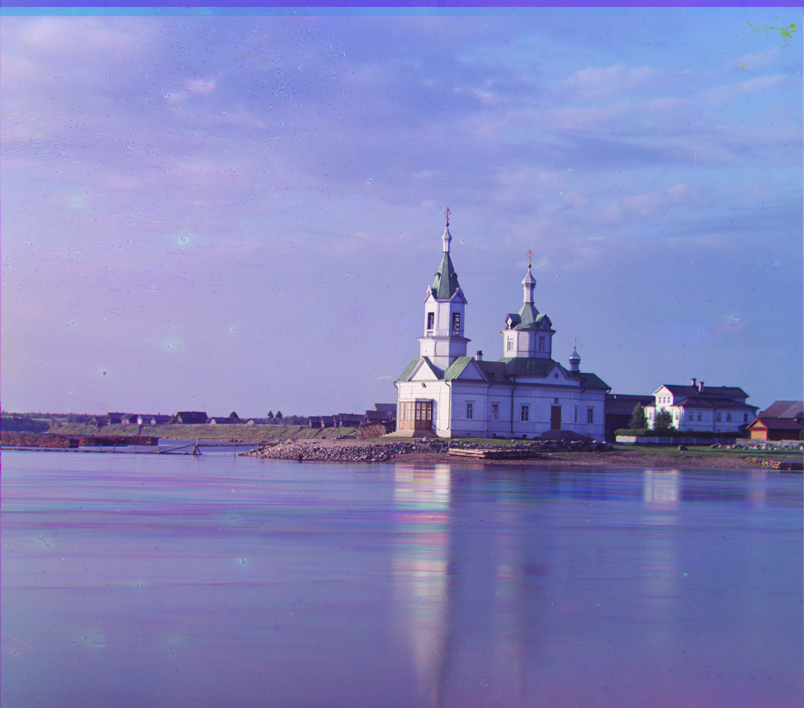
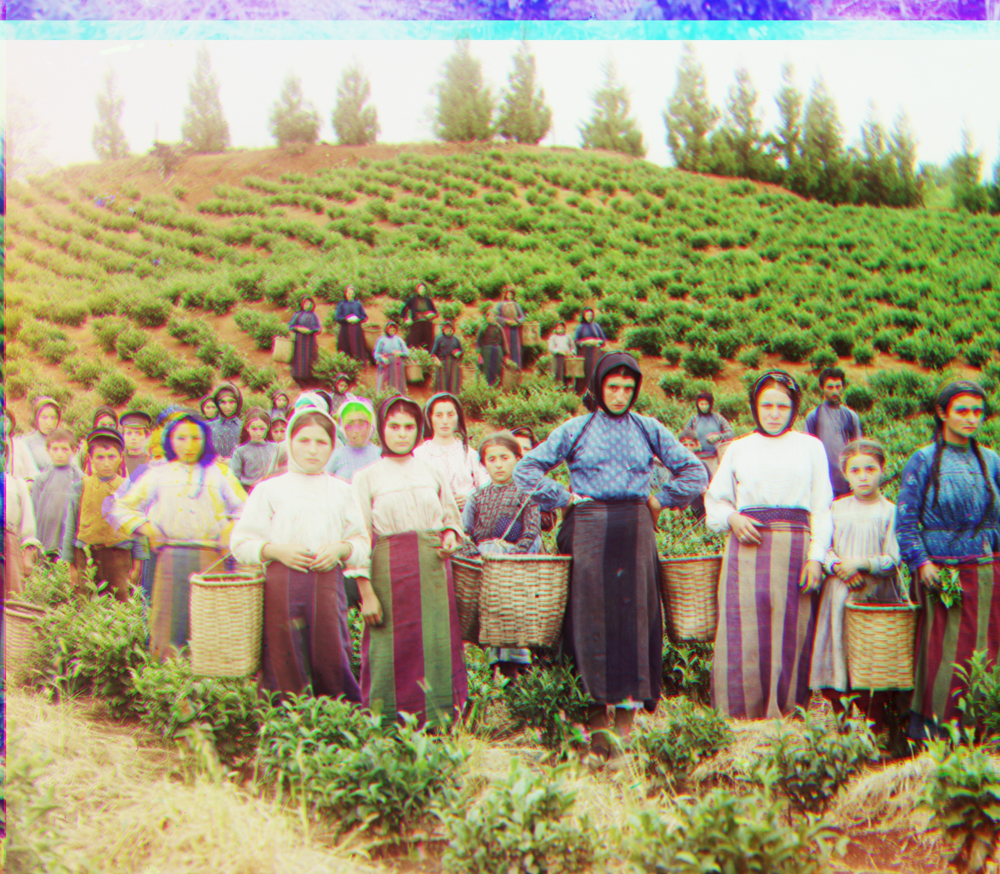
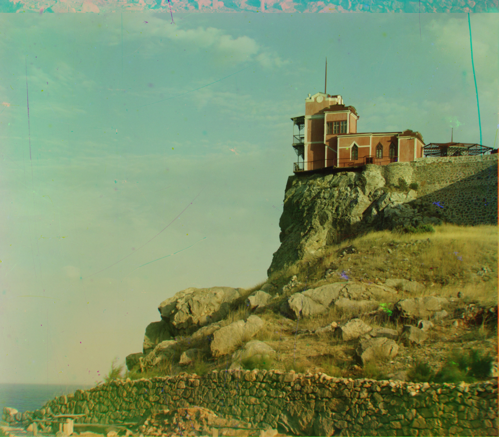
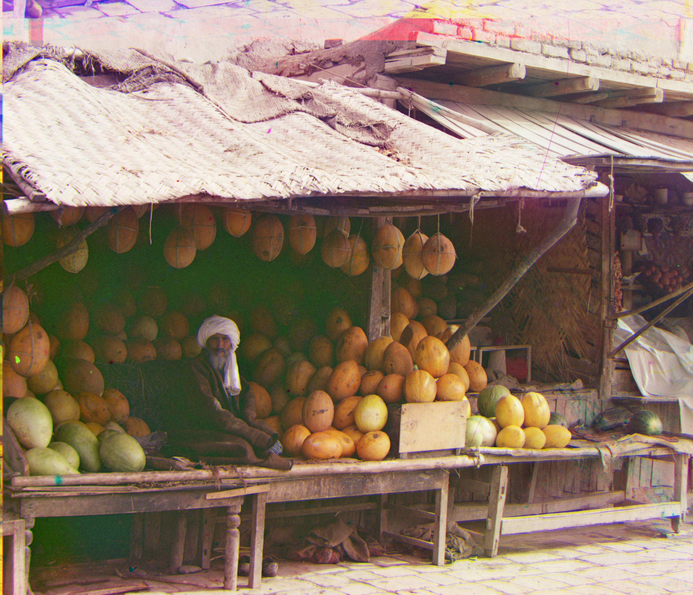

Project 1: Colorizing the Prokudin-Gorskii Collection
CS180 • Fall 2025
Overview
I split B/G/R glass plates (top→bottom) into channels, crop borders (10% each side), convert to float,
and align G and R to B.
Implemented alignment methods: SSD, NCC, and Phase Correlation.
For large .tif images, I use a coarse-to-fine edge-based pyramid (downscale ×2, 5 levels; central differences / Prewitt edges).
Pipeline

Raw plate (B/G/R stacked top→bottom)

Border crop (10% each side)

Downscale ×2 for 5 steps (coarsest level ~100–120px)

Edge map (central differences / Prewitt)
Selected Results

Emir — pyramid NCC (phase init + edges)

Monastery — pyramid SSD

Cathedral — phase correlation
Selected Results

Church — pyramid NCC
Emir — pyramid SSD

Harvesters — phase correlation

Lastochikino — pyramid NCC

Melons — phase correlation
All Results (Large Images)
Small Images (Low Resolution)
Exhaustive single-scale alignment (SSD/NCC) and phase correlation on JPGs.
| Image | Pyramid SSD | Pyramid NCC | Phase Corr. |
|---|
Large Images (High Resolution)
Coarse-to-fine edge pyramid for SSD/NCC; brightness-invariant phase correlation.
| Image | Pyramid SSD | Pyramid NCC | Phase Corr. |
|---|
Discussion
The edge-based pyramid stabilizes SSD/NCC under illumination and texture changes by matching gradients (central differences / Prewitt).
Phase correlation is brightness-invariant and provides a good coarse initialization on the smallest level.
Parameters used: crop=0.10, base_win=20, target_min≈120, levels≤6.